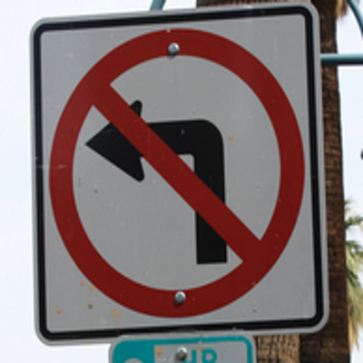
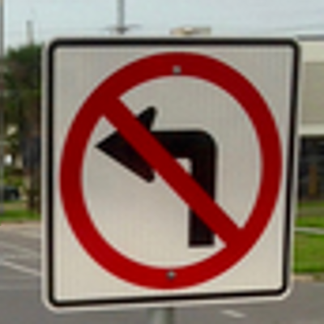
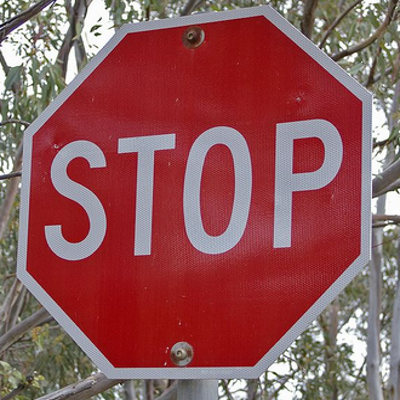
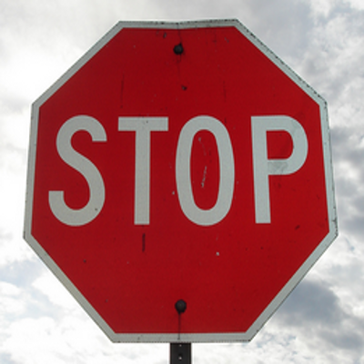
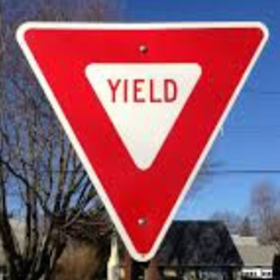
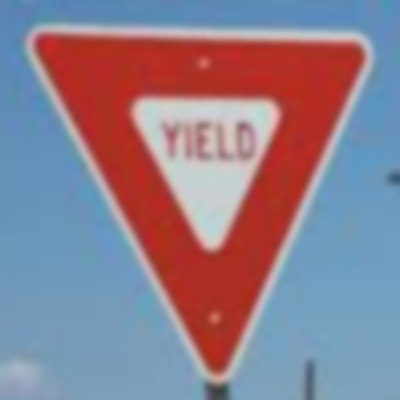

Object Classification
Classifying an object with computer vision algorithms consists of matching image features. Some of these image features are as follows:
- Color
- Shape (Edges)
- Symmetry
- Order of colors
This classification algorithm works as follows:
- Sweep 3 horizontal lines across the image.
- If the pixel in the image is close to red, mark the pixel in the graph as so.
- Sweep 2 horizontal lines across the image.
- If the pixel in the image is close to black, mark the pixel in the graph as so.
- Compare critical points on the graph. Use boolean operators on critical points to classify the image.
Demo
Click on one of the sample images to load the image to be processed. Click Draw Graphs to draw the graph of the image colors
for the given horizontal scanlines. Try adjusting R_MAX, G_MIN, and B_MIN for selecting the proper qualification
of red detection for optimal results.
Click Classify Object to compare critical points on the graph and classify the given image.






Previous - Center of Mass
Next - Mean Shift Motion Tracking